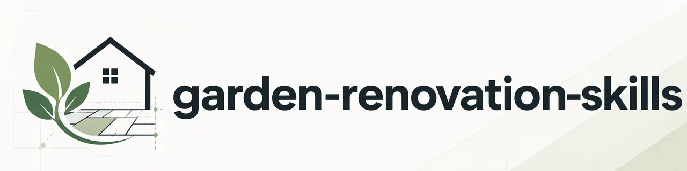
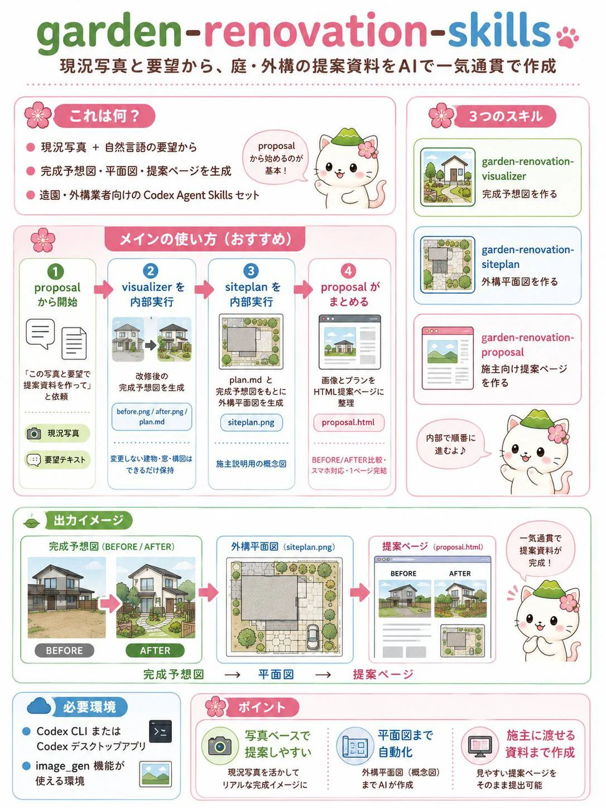
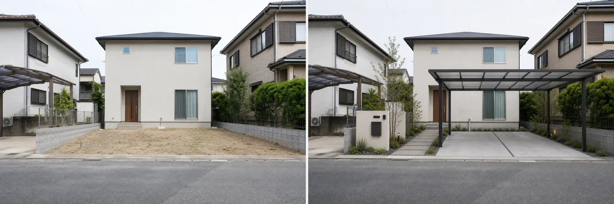
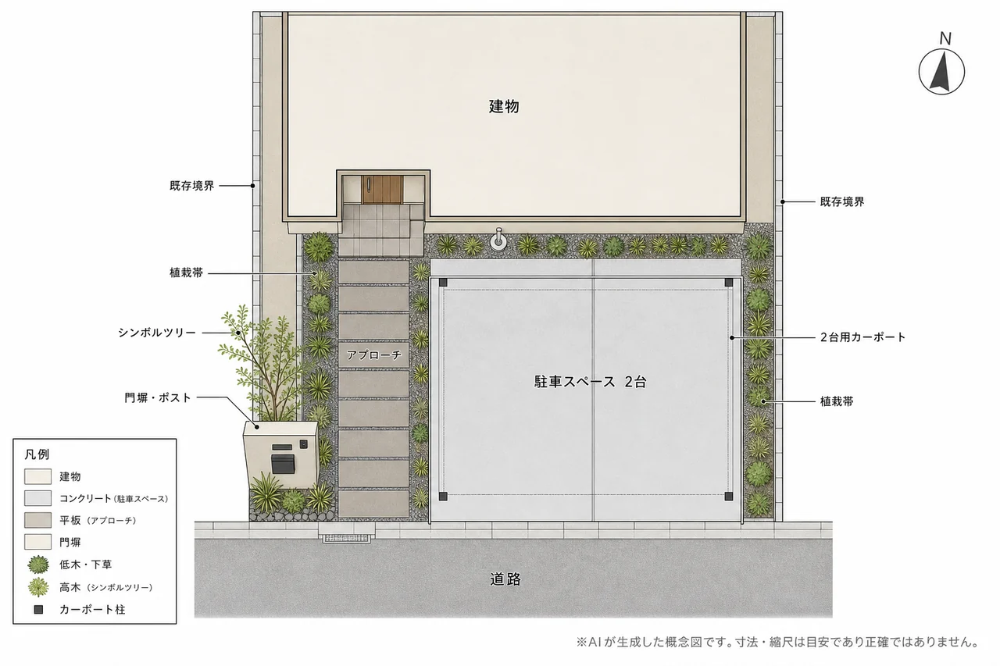

garden-renovation-skills ってなに？
garden-renovation-skills は、庭・外構の現況写真と「こうしたい」という自然言語の要望から、リフォームの提案資料をAIで生成するCodex（コーデックス）用のスキル集です。中心となるスキルに話しかけるだけで、完成予想図の生成 → 平面図の生成 → 提案ページの出力までが一気通貫で完結します。

1枚でわかる全体像
「何ができて、どう使うのか」を1枚にまとめました。案内役のはるにゃさんといっしょにどうぞ。

3つのスキルの役割
- garden-renovation-proposal（入口）：写真と要望を渡せば、提案ページまで仕上げるメインスキル。内部で下の2つを呼び出します。
- garden-renovation-visualizer：現況写真をもとに改修後の完成予想図を生成。建物やフェンスなど変えない部分は写真のまま残し、変えたい所だけを置き換えます。
- garden-renovation-siteplan：プランと完成予想図から、真上から見た外構の平面図を生成。ラベルや方位記号も図の中に描き込みます。
使い方はシンプル
むずかしい操作はありません。写真を添えて、やりたいことを言葉で伝えるだけです。
- 「この庭の写真で提案ページを作って。要望：2台用カーポートを設置して、タイル舗装にしたい。」
- 完成予想図・平面図の生成は内部で自動的に行われ、最後に提案ページ（HTML）が出てきます。
- 「完成予想図だけ」「平面図だけ作り直したい」といった単体での呼び出しもできます。
出力イメージ
実際の出力を見てみましょう。土の駐車スペースが、カーポート＋タイル舗装のモダンな外構に変わります。


最終成果物は 1ページ完結の提案ページ（HTML）。BEFORE/AFTER比較スライダー付きで、フォルダごと渡せばオフラインでも閲覧できます。

完成予想図と平面図は、できあがった画像をそのまま提案ページに貼る仕組みなんだ。だから提案ページを作る段階でAIが絵を描き直して間違える、ということが起きにくいよ。金額や工期も、人が伝えた数字だけが載るようになっているんだ。
うれしいポイント・正直な限界
- 写真ベースなのでリアルな完成イメージを出しやすい。
- 建物・窓・隣地など変えない部分は写真のまま保持。
- 平面図（概念図）まで自動。施主への説明がしやすい。
- 提案ページはモダンデザイン・スマホ対応・1ページ完結。
- 壁のテクスチャや葉の細部まではピクセル単位で一致しない。
- 出力解像度の実用上限は約2K。
- 平面図はCAD図面の代替ではなく、説明用の概念図（寸法・縮尺は概算）。
- 一度に変える項目が多すぎると精度が下がるため、内部で段階に分けて処理。
必要なもの
- Codex CLI または Codex デスクトップアプリ
- Codex の image_gen 機能が使えるプラン（CLI／App 共通）
- スキルをコピーして導入（グローバル、またはプロジェクトローカル）
サンプル・ソースコード
- 提案ページのサンプル：提案ページのサンプルを見る
- ソースコード・使い方（GitHub）：github.com/harunamitrader/garden-renovation-skills
まとめ
garden-renovation-skills は、現況写真と要望を渡すだけで、完成予想図・平面図・提案ページまでをAIで一気通貫に作る、造園・外構業者さん向けのCodexスキル集です。打ち合わせのその場で「こう変わります」を見せたいときに役立ちます。細部の完全一致やCAD図面の代わりにはなりませんが、施主への説明用の提案資料を素早く形にするのが得意なツールです。
木そのものの育て方は 庭木・苗木の植え方、木の名前や特徴を知りたいときは プラント アニマルズ もどうぞ。